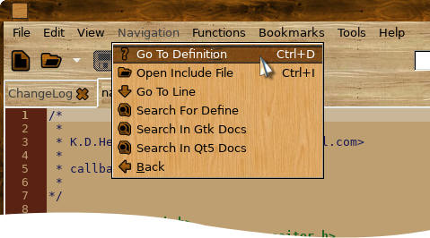

Help Manual

Navigation Menu
Functions Menu
Tools Menu
Preferences
TO BE DONE - PLEASE READ
Navigation Menu
The Navigation menu has two sub-menus - Go To Definition and Open Include File.
To go where a function etc is defined, select it and choose 'Go To Definition' KKEdit will then look in open files for the definition and switch to that page and highlight the appropriate line like so:


As you can see as the definition was not in an open file KKEdit looks for the definition recursively starting from the folder where the file was opened from and if found opening the file and selecting the line with the definition.
Functions Menu
The Functions menu contains a list of all defined functions, variables and defines that are visible in this file, to jump to the appropriate function definition just select it from the menu like so:

Tools Menu
The Tools menu allow you to run an external script ie to open a terminal with the working directory set to the folder where the current file is open:

External tools can either be added globally to /usr/share/KKEdit/tools (if you have installed with --prefix=/usr) or locally in ~/.KKEdit/tools.
External tools are just script files with the second line beginning with a '#' like so:

Where the first number can be 0 to ignore the output from the script, 1 to replace the currently selected text (or insert at the cursor) and 2 to replace the entire contents of the current document with the output from the script.
The second number if set to 1 will run the script in a terminal, you must have an app called 'terminal' somewhere in your path, in Xfce4 for instance 'terminal' is a symlink to '/usr/bin/terminal'
The final bit is the name that appears in the 'Tools' menu of KKEdit.
Preferences
The Prefs file is created ~/.KKEdit/kkedit.rc and will be created/recreated when quitting KKEdit, the format is one prefname for each line followed by a value like so:
indentcode 1
showlinenumbers 1
wrapline 1
highlightcurrentline 1
tabwidth 4
font mono 10
What the variables do is fairly self evident, a one is a boolean value and turns the variable on a 0 turns off.
The tab width is number of spaces for a tab.
The font should specify a fontname and size.
TO BE DONE
1) Make find/replace MUCH more versatile with case insensitive search, file wrap, replace-all and maybe simple regex.
2) Set up a proper GUI to build an external tool script.
3) Set up a GUI for the preferences
4) Add bookmarks.
5) Check for file changing on disk and issue alert.
6) A decent icon.
7) Improve this help file.